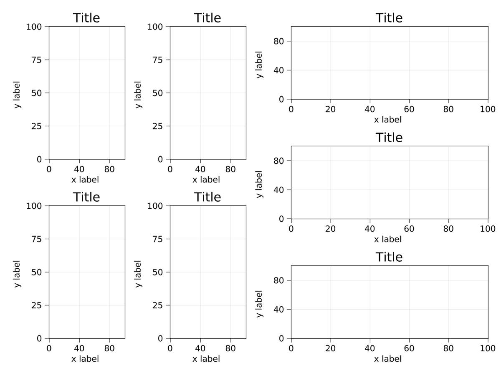
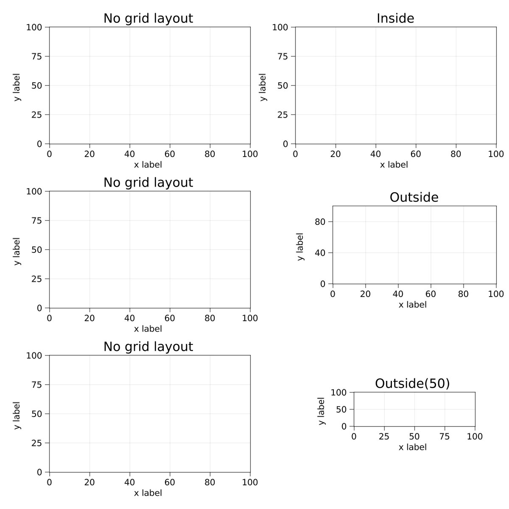
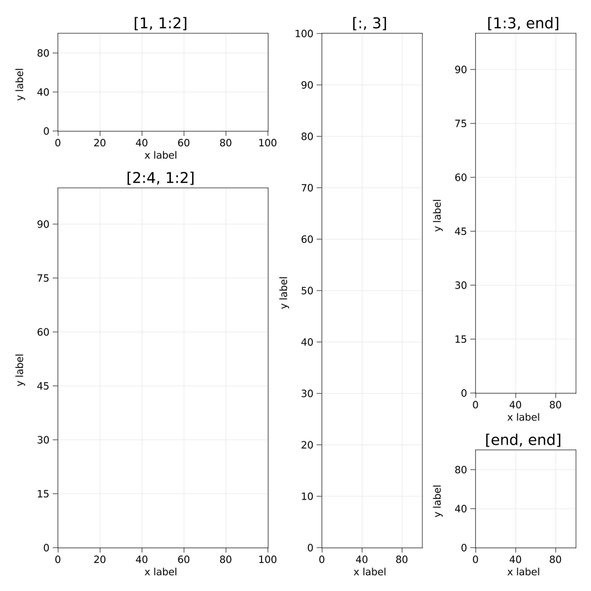
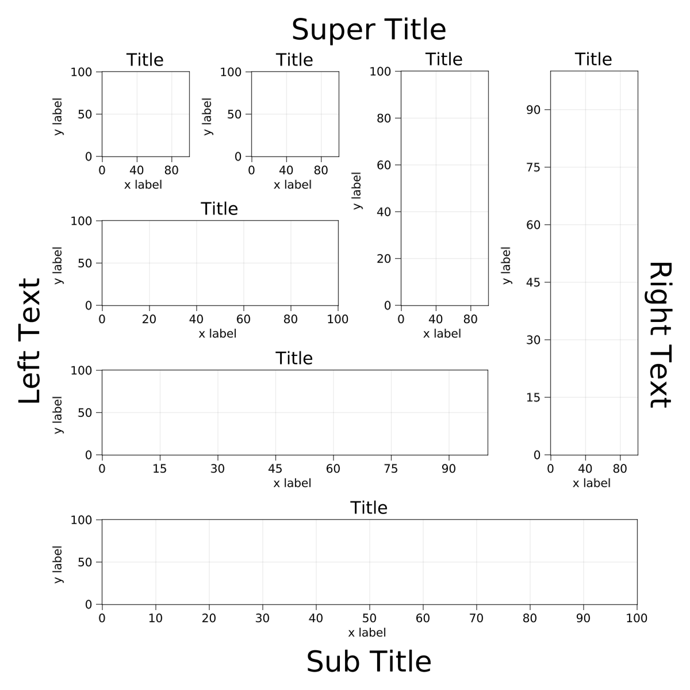
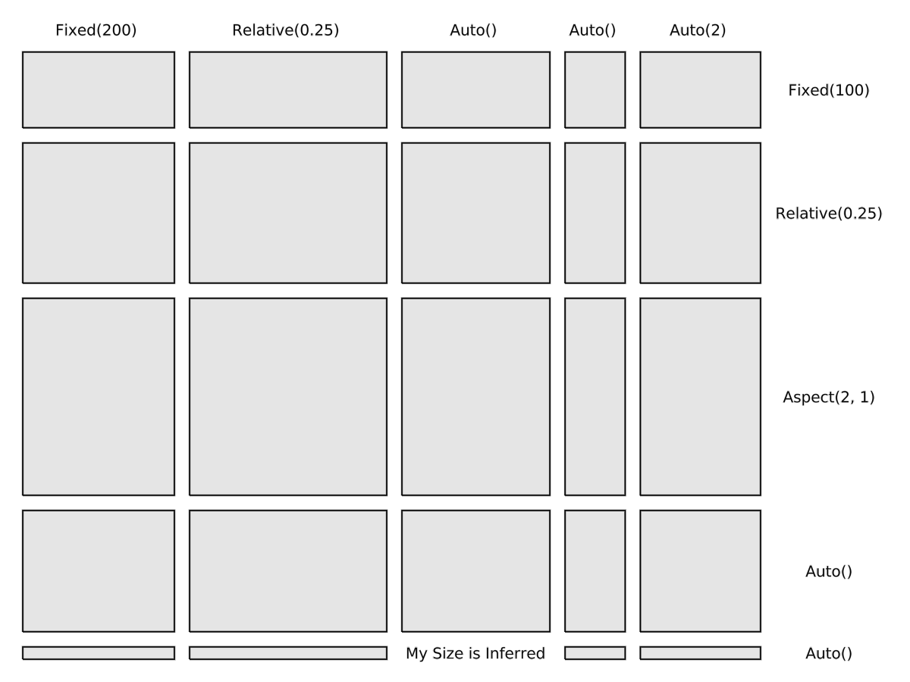

Nesting
Grids can be nested inside other grids, and so on, to arbitrary depths. The top grid's parent should be the scene in which the layout is placed. When you place a grid inside another grid, that grid is automatically made its parent. Grids also are by default set to alignmode Inside which means that the content edges are aligned to the grid's bounding box, excluding the outer protrusions. This way, plots in nested grids are nicely aligned along their spines.
using MakieLayout
using Makie
scene, layout = layoutscene(30, resolution = (1200, 900))
subgl_left = GridLayout()
subgl_left[1:2, 1:2] = [LAxis(scene) for i in 1:2, j in 1:2]
subgl_right = GridLayout()
subgl_right[1:3, 1] = [LAxis(scene) for i in 1:3]
layout[1, 1] = subgl_left
layout[1, 2] = subgl_right
Alignment
Here you can see the difference between the align modes Outside with and without margins and the Inside alignmode. Only the standard Inside mode aligns the axis spines of the contained axes nicely. The Outside mode is mostly useful for the main GridLayout so that there some space between the window edges and the plots. You can see that the normal axis looks the same as the one placed inside the grid with Inside alignment, and they are both effectively aligned exactly the same.
using MakieLayout
using Makie
scene, layout = layoutscene(30, resolution = (1200, 1200))
layout[1, 1] = LAxis(scene, title="No grid layout")
layout[2, 1] = LAxis(scene, title="No grid layout")
layout[3, 1] = LAxis(scene, title="No grid layout")
subgl_1 = layout[1, 2] = GridLayout(alignmode=Inside())
subgl_2 = layout[2, 2] = GridLayout(alignmode=Outside())
subgl_3 = layout[3, 2] = GridLayout(alignmode=Outside(50))
subgl_1[1, 1] = LAxis(scene, title="Inside")
subgl_2[1, 1] = LAxis(scene, title="Outside")
subgl_3[1, 1] = LAxis(scene, title="Outside(50)")
layout[1:3, 2] = [LRect(scene, color = :transparent, strokecolor = :red) for i in 1:3]
Spanned Placement
Elements in a grid layout can span multiple rows and columns. You can specify them with the range syntax and colons for the full width or height. You can also use end to specify the last row or column.
using MakieLayout
using Makie
scene, layout = layoutscene(4, 4, 30, resolution = (1200, 1200))
layout[1, 1:2] = LAxis(scene, title="[1, 1:2]")
layout[2:4, 1:2] = LAxis(scene, title="[2:4, 1:2]")
layout[:, 3] = LAxis(scene, title="[:, 3]")
layout[1:3, end] = LAxis(scene, title="[1:3, end]")
layout[end, end] = LAxis(scene, title="[end, end]")
Auto-resizing
If you index outside of the current range of a grid layout, you do not get an error. Instead, the layout automatically resizes to contain the new indices. This is very useful if you want to iteratively build a layout, or add super or side titles.
using MakieLayout
using Makie
scene, layout = layoutscene(30, resolution = (1200, 1200))
layout[1, 1] = LAxis(scene)
for i in 1:3
layout[:, end+1] = LAxis(scene)
layout[end+1, :] = LAxis(scene)
end
layout[0, :] = LText(scene, text="Super Title", textsize=50)
layout[end+1, :] = LText(scene, text="Sub Title", textsize=50)
layout[2:end-1, 0] = LText(scene, text="Left Text", textsize=50,
rotation=pi/2)
layout[2:end-1, end+1] = LText(scene, text="Right Text", textsize=50,
rotation=-pi/2)
Column and row sizes
You can manipulate the sizes of rows and columns in a grid. The choices are between fixed widths in pixels, relative widths in fractions of one, aspect ratio widths that are relative to a selected row or column, and auto widths. Auto widths depend on the content of the row or column. Some elements like LText have a determinable width or height. If there are single-span elements in a row that have a determinable height and the row's height is set to auto, it will assume the largest height of all determinable elements it contains. This is very useful for placement of text, or other GUI elements like buttons and sliders. If a row or column does not have a determinable height or width, it defaults to an equal share of the remaining space with all other auto rows or columns. You can adjust the ratio of this share with the Integer argument of the Auto struct.
using MakieLayout
using Makie
scene = Scene(resolution = (1200, 900), camera=campixel!)
layout = GridLayout(
scene, 6, 6,
colsizes = [Fixed(200), Relative(0.25), Auto(), Auto(), Auto(2), Auto()],
rowsizes = [Auto(), Fixed(100), Relative(0.25), Aspect(2, 1), Auto(), Auto()],
alignmode = Outside(30, 30, 30, 30))
for i in 2:6, j in 1:5
if i == 6 && j == 3
layout[i, j] = LText(scene, text="My Size is Inferred")
else
layout[i, j] = LRect(scene)
end
end
for (j, label) in enumerate(["Fixed(200)", "Relative(0.25)", "Auto()", "Auto()", "Auto(2)"])
layout[1, j] = LText(scene, width = Auto(false), text = label)
end
for (i, label) in enumerate(["Fixed(100)", "Relative(0.25)", "Aspect(2, 1)", "Auto()", "Auto()"])
layout[i + 1, 6] = LText(scene, height = Auto(false), text = label)
end
Trimming empty rows and columns
If you change a layout interactively and end up with unused rows or columns, trim! will remove those for you:
using MakieLayout
using Makie
scene, layout = layoutscene(resolution = (600, 600))
record(scene, "example_trimming.mp4", framerate=1) do io
ax1 = layout[1, 1] = LAxis(scene, title = "Axis 1")
recordframe!(io)
ax2 = layout[1, 2] = LAxis(scene, title = "Axis 2")
recordframe!(io)
layout[2, 1] = ax2
recordframe!(io)
trim!(layout)
recordframe!(io)
layout[2, 3:4] = ax1
recordframe!(io)
trim!(layout)
recordframe!(io)
end